@AJENews
📝 原文:
🇨🇳 译文:


🕒 2026-08-17T13:20:49+00:00
| 来源 | 旧窗口内数量 | 本次新增 | 本次淘汰 | 当前窗口内共有 |
|---|---|---|---|---|
| 推文 + Dawn 新闻 | 0 | 32 | 0 | 32 |
| ARY News | 0 | 0 | 0 | 0 |
注：淘汰数 = 旧窗口内数量 + 本次新增 - 当前窗口内共有
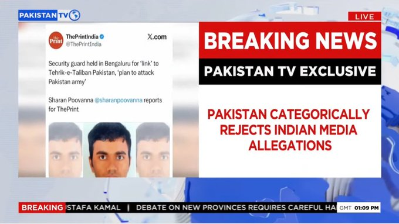
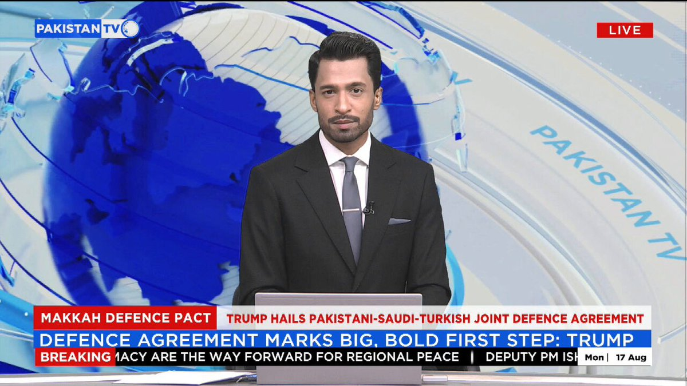
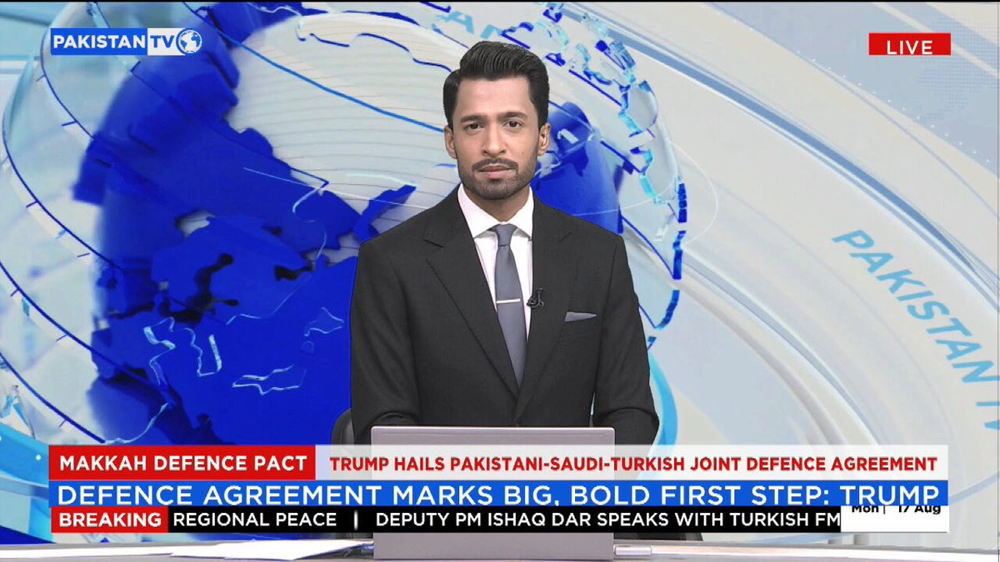
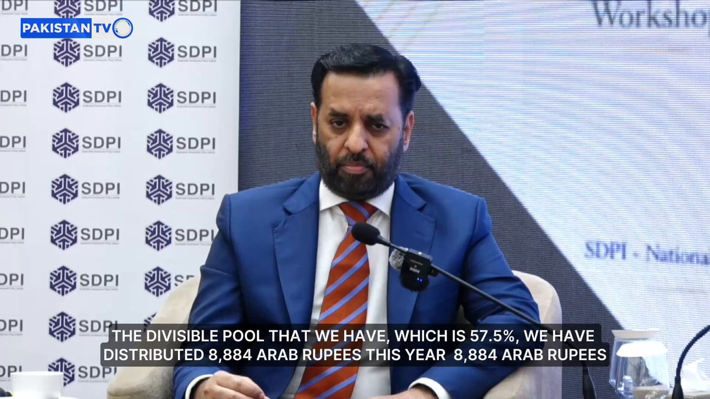
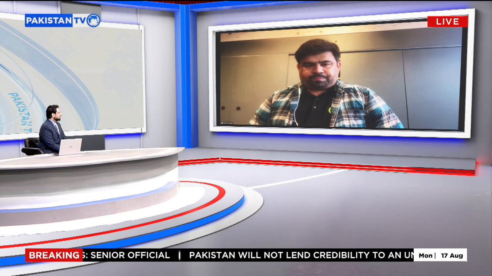

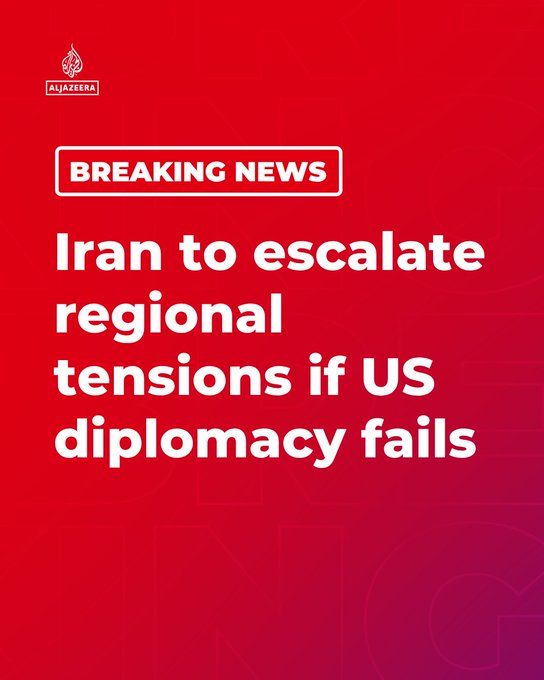

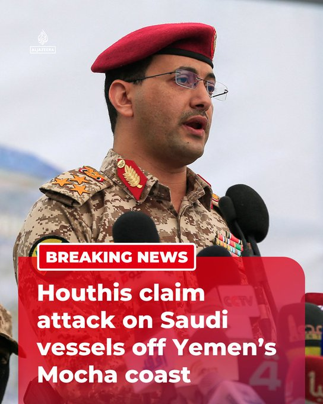
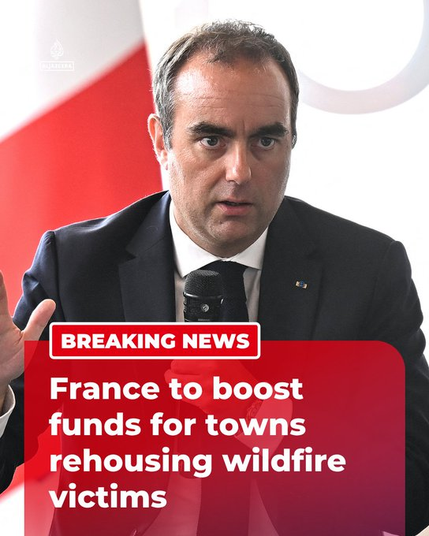
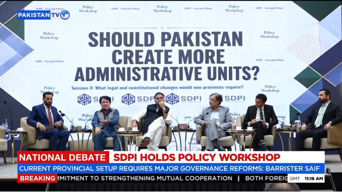
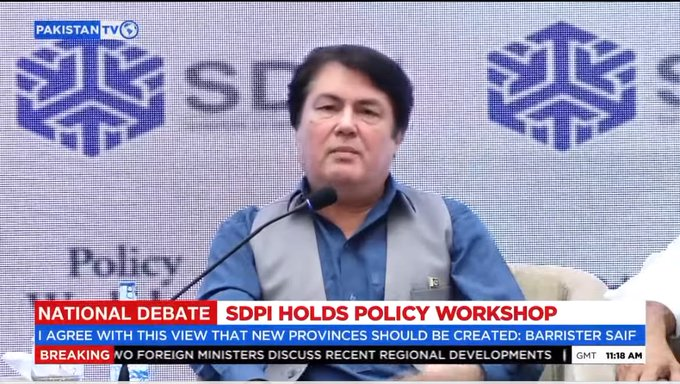
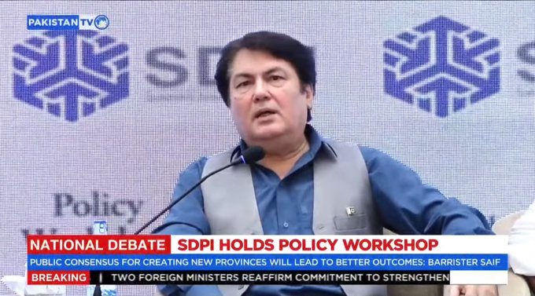
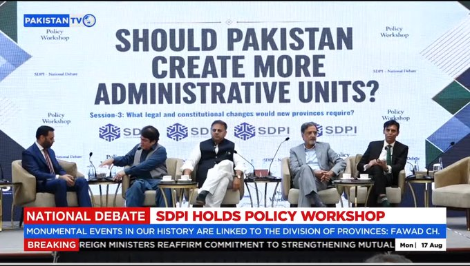
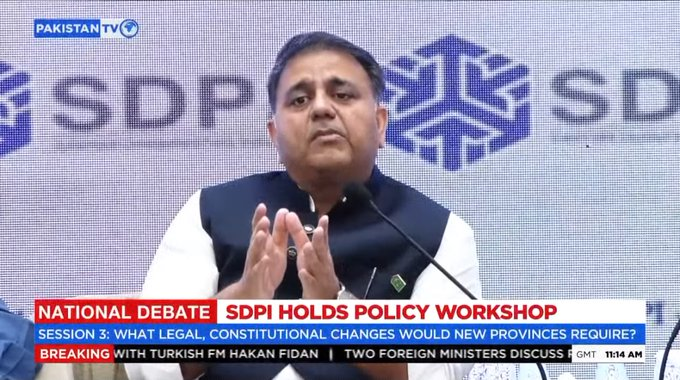
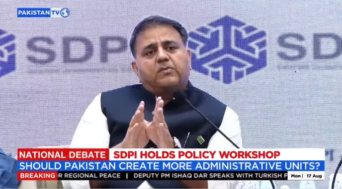
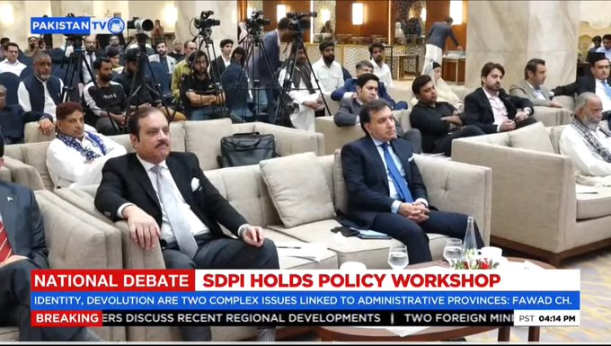
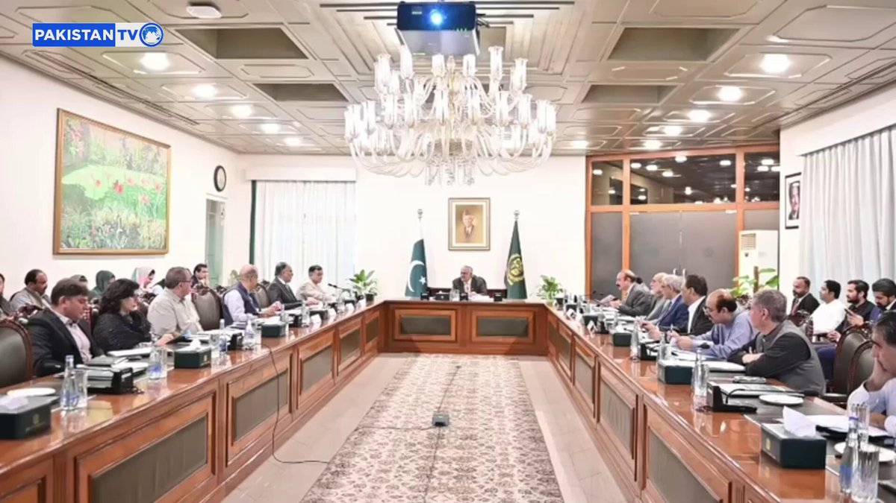


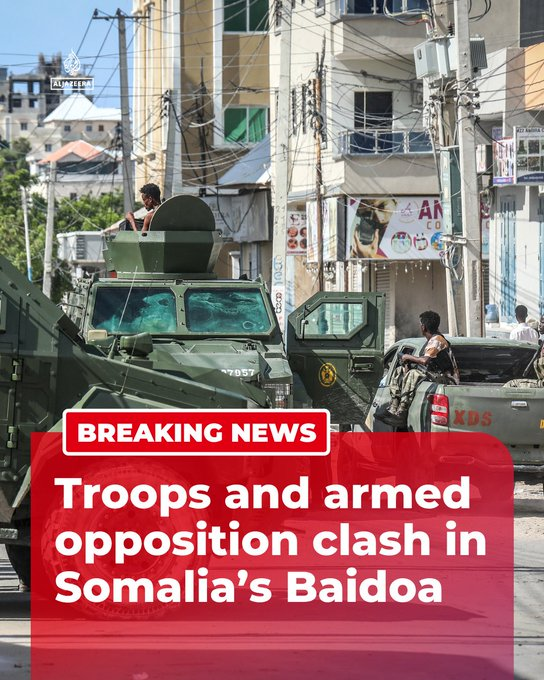

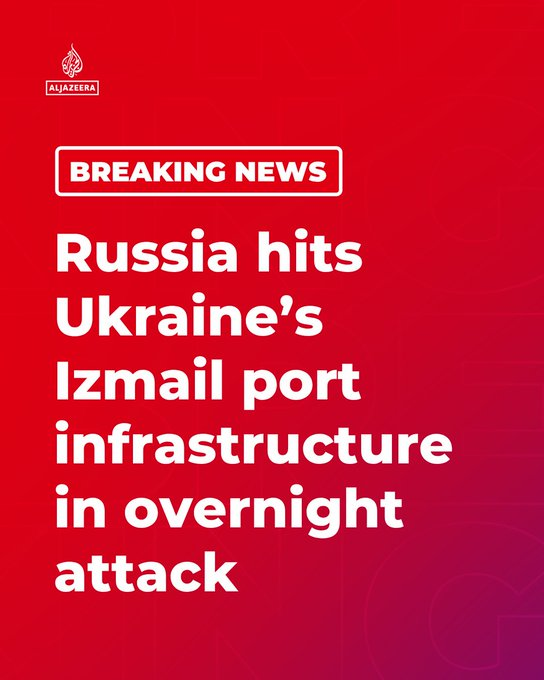

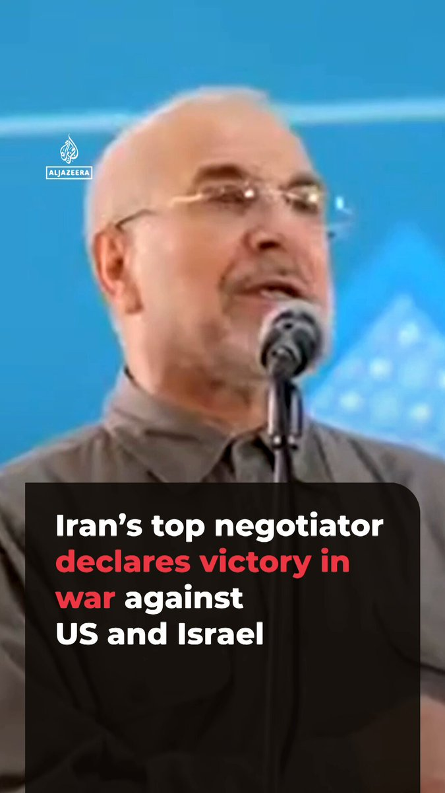


暂无文章。